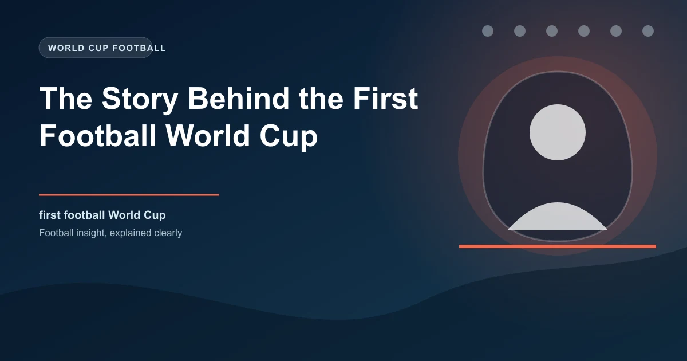

The FIFA World Cup is the biggest sporting event on the planet. Over four billion people watched the 2022 final in Qatar. But the first World Cup, held in Uruguay in 1930, was a gamble that nearly failed before it began.
Only 13 teams participated. Several of the world's best nations refused to travel. The tournament was organized in just two months. And yet, against all odds, the 1930 World Cup laid the foundation for what would become the most watched sporting competition in human history.
Football had been an Olympic sport since 1900, but the Olympics had strict amateur rules that prevented professional players from participating. By the late 1920s, the world's best footballers were all professionals, playing in leagues across Europe and South America. The Olympics no longer represented the highest level of the sport.
FIFA president Jules Rimet had been pushing for an international tournament since the early 1920s. He envisioned a competition that would bring together the best professional players from around the world, regardless of their amateur or professional status. After years of planning and political maneuvering, FIFA voted in 1928 to organize its own world championship.
The vote was not unanimous. Several European nations, particularly those in Northern Europe, were skeptical about the idea. The British nations, who had only recently returned to FIFA after a 17-year absence, were particularly resistant. They saw the tournament as unnecessary given the existing international calendar.
Uruguay was chosen as the first World Cup host for several compelling reasons. The country had won the Olympic football tournaments in 1924 and 1928, establishing itself as the world's strongest football nation. Uruguay was also celebrating the centenary of its first constitution in 1930, which provided a patriotic reason to host a major international event.
Uruguay's football infrastructure was impressive by 1930 standards. The Estadio Centenario, built specifically for the tournament, could hold 90,000 spectators and was one of the largest stadiums in the world at the time. The Uruguayan government invested heavily in the tournament, recognizing its potential to showcase the country on a global stage.
The Estadio Centenario was completed just days before the tournament began. Construction workers labored around the clock to finish the stadium in time, and the opening match was played on July 13, 1930, just weeks after the final construction work was completed.
The biggest challenge facing the first World Cup was getting European teams to travel to South America in 1930. The journey by ship from Europe to Uruguay took approximately two weeks each way, meaning teams would be away from their domestic leagues for over a month.
FIFA offered to pay travel expenses for European teams, but many refused. The British nations declined to participate, citing the distance and the fact that their domestic leagues were still in season. Germany, Austria, and Hungary also withdrew, citing similar concerns.
In the end, only four European teams made the journey: France, Belgium, Romania, and Yugoslavia. The other nine teams came from South America (Argentina, Brazil, Chile, Paraguay, Peru, Uruguay), North America (Mexico, United States), and one from Asia (none participated).
The 1930 World Cup had a simple knockout format with no group stage. The 13 teams were divided into four groups, with the group winners advancing to the semi-finals. This format was straightforward but meant that a single bad performance could eliminate a team immediately.
The matches were played across three stadiums in Montevideo: the Estadio Centenario, the Estadio Pocitos, and the Estadio Parque Central. The Estadio Centenario hosted most of the matches, including the final, while the smaller venues handled early-round fixtures.
| Stage | Date | Matches |
|---|---|---|
| Group Stage | July 13�22, 1930 | 12 matches across 4 groups |
| Semi-finals | July 26�27, 1930 | 2 matches |
| Final | July 30, 1930 | 1 match |
The first World Cup match was played on July 13, 1930, between France and Mexico at the Estadio Pocitos. France won 4-1, with Lucien Laurent scoring the first goal in World Cup history. The goal was a simple close-range shot, but it marked the beginning of football's greatest competition.
The United States emerged as a surprise package, defeating Belgium 3-0 and Paraguay 3-0 in the group stage. Their team included several British-born players who had emigrated to America, bringing with them the tactical knowledge of the English game.
Argentina and Uruguay both dominated their groups, scoring freely and conceding few goals. The two South American giants were clearly the strongest teams in the tournament, and a final between them seemed inevitable.
The 1930 World Cup final, played on July 30 at the Estadio Centenario, was a rematch of the 1928 Olympic final. Uruguay and Argentina had met twice in the previous two Olympic tournaments, with each team winning once.
The final was a tense, physical affair. Argentina took an early lead, but Uruguay equalized before halftime. In the second half, Uruguay scored two more goals to win 4-2. The Estadio Centenario erupted as the Uruguayan players celebrated the first World Cup victory.
The match was watched by approximately 68,000 spectators, a record attendance for a football match at the time. The Uruguayan government declared a national holiday in celebration.
There was controversy about the match ball. Argentina insisted on using their own ball for the first half and Uruguay's ball for the second half. Uruguay scored twice with their ball in the second half, leading to accusations of favoritism. The ball used for the first half had been inflated more, making it travel farther when kicked.
The first World Cup was a commercial success, generating significant revenue for FIFA and Uruguay. The tournament proved that an international football competition could capture the public's imagination in a way that the Olympics could not.
More importantly, the 1930 World Cup established the template for future tournaments. The knockout format, the group stage, the hosting requirements, and the qualification process all evolved from the lessons learned in Uruguay.
The success of the 1930 tournament also encouraged more European nations to participate in subsequent World Cups. By 1934, when Italy hosted the second World Cup, most major European nations had entered, including England, who would participate for the first time.
The 1930 World Cup had just 13 teams. The 2026 World Cup, to be hosted jointly by the United States, Canada, and Mexico, will feature 48 teams. The tournament has grown from a 13-team experiment into the world's largest sporting event.
The principles established in 1930 remain the foundation of the modern World Cup: a host nation provides the infrastructure, teams qualify through regional competitions, and the best team is crowned world champion after a month of matches.
Jules Rimet's vision of a global football championship has been realized beyond anything he could have imagined in 1930. The World Cup is now a cultural phenomenon that transcends sport, bringing together billions of people across every continent.
Check our free daily football predictions for every match of the season.
Generate optimized accumulator combinations from today's AI-powered predictions. Set your target odds and get instant ticket suggestions.
Pro Ticket Builder →Catch live matches as they happen. Get golden tips and in-play alerts.
In-Play Tips